Меню
ВСТУП
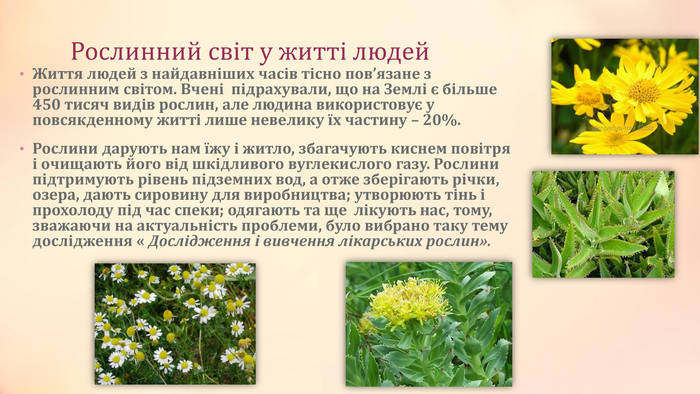
Види лікарських рослин
Якщо назви всіх лікарських рослин укласти в список, він буде надзвичайно довгим! Загалом у світі відомо понад 20 тисяч видів лікарських рослин, переважно їх застосовують у народній медицині. Проте науковці невпинно вивчають склад лікарських рослин, виділяють із них активні компоненти, досліджують дію й можливість застосування в схемах лікування та профілактики найрізноманітніших захворювань. Сучасні класифікації ґрунтуються на терапевтичній дії й ефектах лікарських рослин. Зокрема, згідно з фармакологічною класифікацією, лікарські рослини поділяють на групи:
Алтеї корені(лікарський)
Алтей лікарський- це багаторічна трав'яниста рослина. Має широке вертикальне кореневище з простими, рідше галузистими жовто-бурими коренями, які досягають 50 см довжини. З кореневища виходять кілька прямостоячих сірувато-зелених, угорі короткогалузистих стебел заввишки близько 1 м з листками і блідо-рожевими квітками, розміщеними по кілька штук у пазухах верхніх листків.Основна лікарська сировина — корінь. Корені алтеї лікарської багатоголові. Від головного кореня довжиною до 50 см відходять численні бокові відгалуження додаткових коренів.
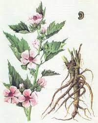 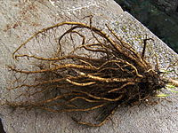 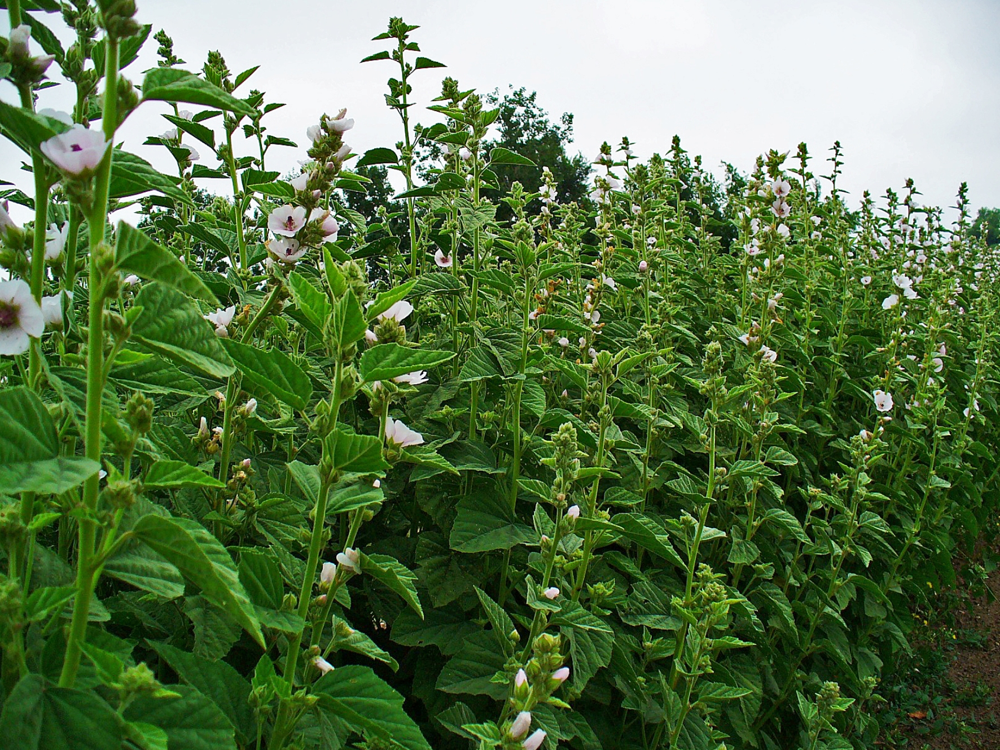Господарське значення: Рослину можна використовувати для одержання з її стебел волокна, а з насіння — олії.
Медицинське значення: Препарати алтеї (порошок, водний настій, рідкий екстракт, сироп) використовують як протизапальний, обволікаючий і відхаркувальний засіб при катаральних станах дихальних шляхів, а також пригострих гастритах і ентероколітах.
Місця її росту та регіони: Алтея лікарська була занесена і поширилась у Північній Америці. Культивується в Україні та Росії. Росте у заплавах та по берегах річок, біля озер. В регіонах напівпустель, солонців і солончаків — здебільшого у заболочених низинах.
Валеріани кореневища з коренями
Валеряна лікарська- багаторічні трав'янисті рослини (30-100 см заввишки) з пучком численних тоненьких коренів, що мають сильний запах. Стебло поодиноке (рідко їх 2—3), пряме, порожнисте, борозенчасте, у верхній частині розгалужене. листки супротивні, непарнопірчасті з 3—19 парами листочків. Листочки довгасті, ланцетні, яйцеподібно-ланцетні або лінійно-ланцетні. Квітки неправильні, зрослопелюсткові, зібрані у великі щиткоподібно-волотисті суцвіття. Чашечка малопомітна, при плодах перетворюється у чубок з 5—15 перистих щетинок. Віночок 4—5 мм завдовжки, червонуватий, темно-рожевий, зрідка білий або фіолетовий, трубчасто-воронкоподібний, з п'ятилопатевим відгином.
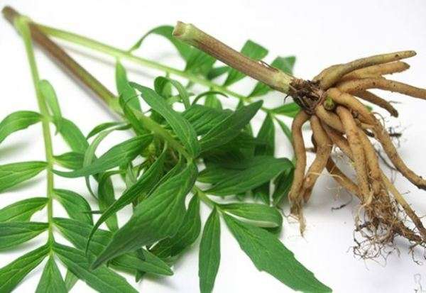 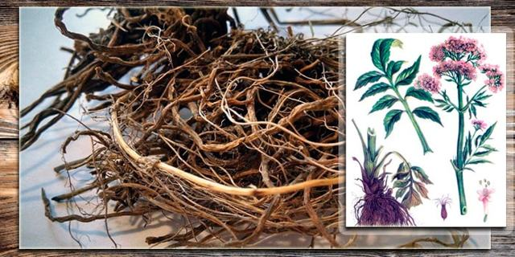Господарське значення:Корені валер'яни містять ефірну валер'янову олію, алкалоїди, смолу, дубильні речовини й органічні кислоти, цукри і крохмаль.
Медицинське значення:Кореневища з коренями валер'яни використовують як засіб, що заспокійливо діє на нервову систему, як протиспазматичний, тонізуючий засіб, при нервових збудженнях, істерії, запамороченнях, безсонні, неврозах серця, нервовому серцебитті, астмі, епілепсії, мігрені, болях у животі і спазмах кишківника, хворобах щитоподібної залози, як протиблювотний і глистогінний засіб.
Місця її росту та регіони:Росте майже по всій території України в заболочених низинах, на суходільних луках, по берегах. Офіцинальною сировиною валеріани лікарської є кореневища з коренями — Rhizomata cum radicibus Valerianae. Заготовляють восени після дозрівання плодів або рано навесні.
Дубова кора
Дубова кора: - являють собою дерева до 40 м заввишки з сильно розгалуженою кореневою системою, розкидистою кроною і потужним стовбуром. Кора у старих дерев буро-сіра, товщиною до 10 см, з тріщинами, у молодих стовбурів і гілок - гладка, оливково-бура. Листки прості, чергові, довгасто-оберненояйцевидні, голі, блискучі.Кора дуба - одно из самых эффективных средств при лечении кожных заболеваний, слизистой ротовой полости или гортани. Отлично помогает дубовая кора при ожогах и обморожениях, диарее, помогает вылечить женские заболевания.
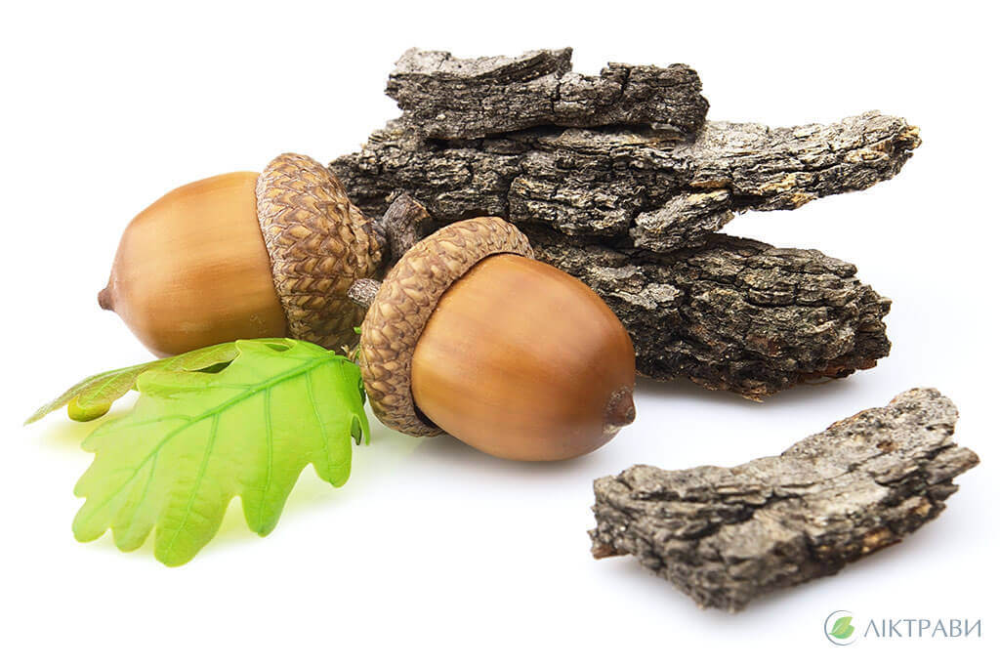 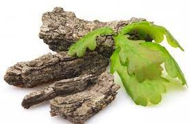Господарське значення:З плодів дуба жолудів виготовляють сурогат кави.
Медицинське значення:У дубовій корі містяться дубильні речовини, пентозани, пектини, флавоноїди та інші біологічно активні складові – ось чому корисна кора дуба.Використовуються як антисептик для полоскань горла та порожнини рота при запальних захворюваннях, а також як засіб проти неприємного запаху з рота та для зміцнення ясен. Як в'яжучий і кровоспинний засіб - при маткових кровотечах, при захворюваннях кишечника, при дизентерії. Приймають усередину. У вигляді примочок від ран, пролежнів, опіків, невеликих пошкоджень шкіри.
Місця її росту та регіони:Дуб — основна лісотвірна порода Лісостепу, росте в суміші з сосною, грабом, ясеном, ялиною, буком (див. також діброва). Росте на більшій частині України, в Степу рідше, головним чином в долинах річок. Він займає 27 % площі державного лісового фонду України. Основні заготівлі роблять під час рубок, догляду і головних рубок у Кіровоградській, Тернопільській, Хмельницькій, Вінницькій, Черкаській, Київській, Чернігівській, Полтавській, Сумській, Харківській, Донецькій, Івано-Франківській, Львівській і Чернівецькій областях.
Кропивові листя
Кропива: - багаторічна рослина, що відрізняється високим прямостоячим стеблом з невеликою кількістю супротивних гілок у верхній частині. Висота рослини досягає 70-150 см. Густо покрита волосками двох типів - пекучими і простими. Листя кропиви - супротивне довгочерешкове, загострене, крупно-пильчасте. Довжина листя може сягати 15 см.Рослина має високу цінність, незважаючи на те, що вважається бур'яном.Препарати рослини застосовуються як загальнозміцнювальний засіб, а також для лікування широкого спектра захворювань.
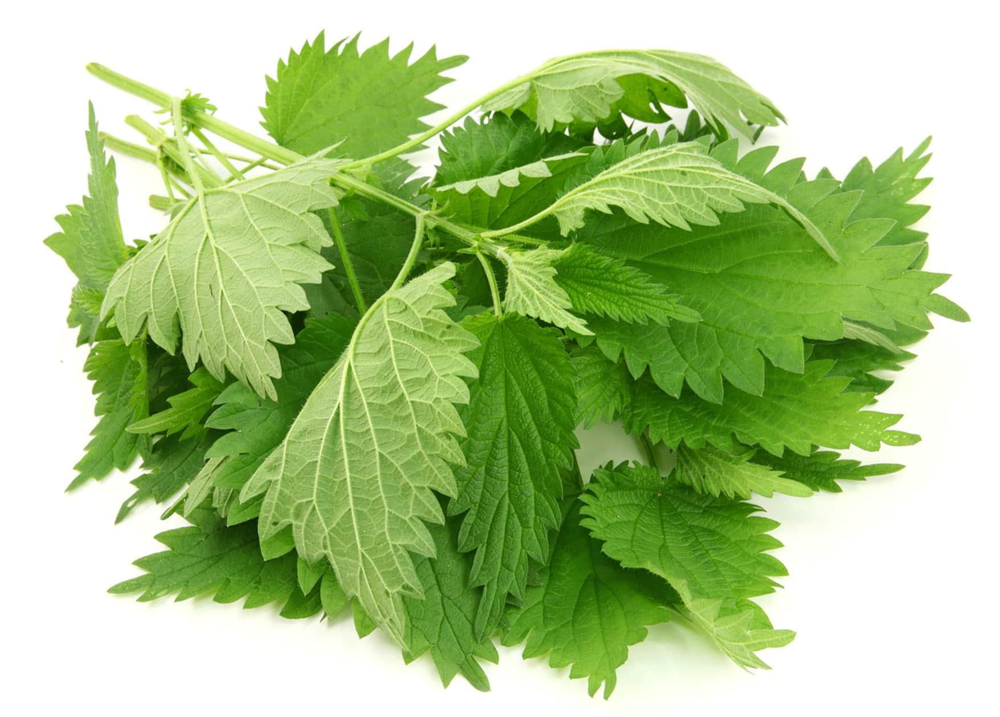 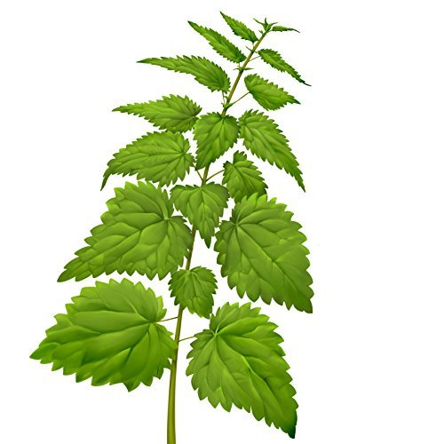Господарське значення:Листя кропиви не поступаються за поживністю бобам, гороху та іншим бобовим.Молоді пагони цієї рослини використовують для приготування салатів, супів, соусів, випічки, а ще квасять, як капусту. Сушене листя часто можна знайти у складі чайних сумішей.
Медицинське значення:Головні корисні властивості кропиви - здатність зв'язувати кров і надавати судинозвужувальну дію. Обумовлюється це наявністю вітаміну K, який стимулює вироблення протромбіну. За рахунок цього ефекту препарати на її основі застосовують для зупинки шлунково-кишкових і гінекологічних кровотеч.Відвари і настойки, а також сік рослини корисні для поліпшення імунітету.
Місця її росту та регіони:Кропиваросте по всій території України на берегах річок, як бур'ян по городах, у садах, поблизу житла, серед чагарників.
Подорожник великого листя
Подорожник великого листя: - cтебло 10 — 60 см заввишки, з коротким кореневищем і розеткою прикореневих листків, безлисте, тонкоборознисте, голе або трохи опушене. Листки яйцеподібні або еліптичні з трьома-сімома жилками, цілокраї, голі, з клиноподібною основою і розширеним жолобчастим черешком, що за довжиною дорівнює пластинці. Суцвіття (5-15 см завдовжки) довгоциліндричне, колосоподібне, при основі рідкувате. Квітки дрібні, з приквітками, правильні, зрослопелюсткові. Чашечка чотирироздільна з овальними тупими, перетинчастими частками, віночок (до 3 мм завдовжки) буруватий, сухий, плівчастий, трубчастий з яйцеподібними тупуватими частками. Тичинок чотири з фіолетовими або жовто-бурими пиляками, маточка одна з верхньою зав'яззю, одним стовпчиком і дволопатевою приймочкою. Плід — багатонасінна темно-коричнева яйцеподібна коробочка (0,7 — 1,2 мм завдовжки).
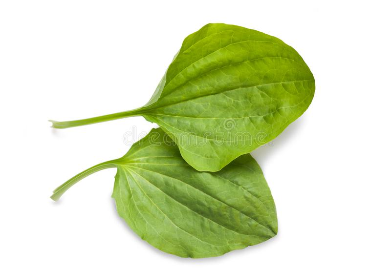 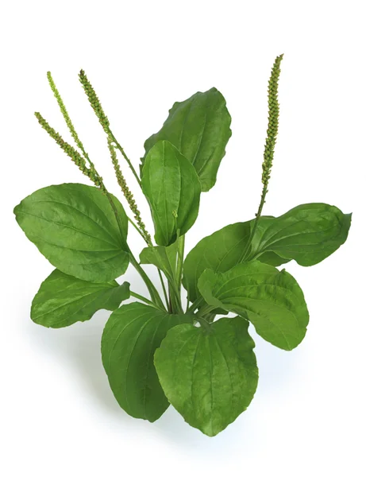 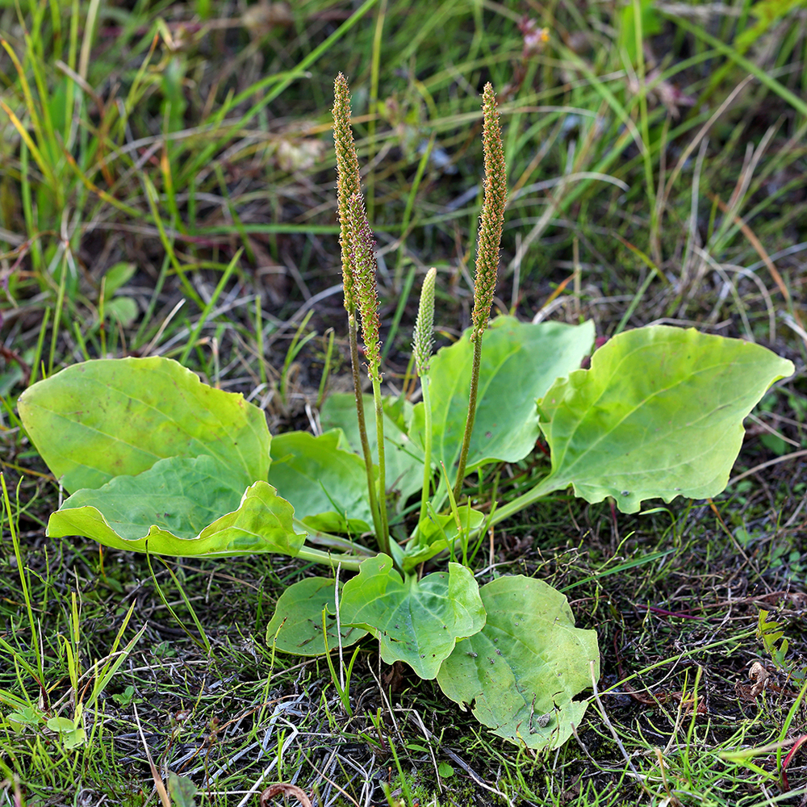Медицинське значення:Подорожник є природним засобом, здатним знижувати рівень холестерину. Наявність слизу в листках рослини дозволяє використовувати її в лікуванні вірусних і простудних захворювань. Настої та відвари подорожника сприяють відхаркуванню. Його використовують при лікуванні бронхітів, бронхіальної астми, пневмонії, коклюшу, туберкульозу.Листя подорожника прикладають до зовнішніх пошкоджень шкіри. Застосування рослини має сильний ранозагоювальний, протизапальний і кровоспинний ефект.Настої і відвари подорожника використовують як жарознижувальний засіб.
Місця її росту та регіони:Поширення Подорожник великий росте на галявинах, луках, уздовж просік, на лісокультурних площах і як бур'ян на розсадниках. Тіньовитривала рослина. Цвіте у травні — липні.
Ромашкові квітки
Ромашкові квітки: - однорічна рослина 15-60 см заввишки, з розгалуженим, борозенчастим стеблом. Листки чергові, 2-3-перисто-розсічені, сидячі. Квітки дрібні, зібрані у верхівкові суцвіття — кошики.Крайові квітки кошиків язичкові, білі, серединні — трубчасті, жовті, містяться на довгому, конічному, всередині порожнистому квітколожі. Цвіте в червні — серпні.Плід — довгаста сім'янка без чубка волосків.Рослина з сильним ароматним запахом.
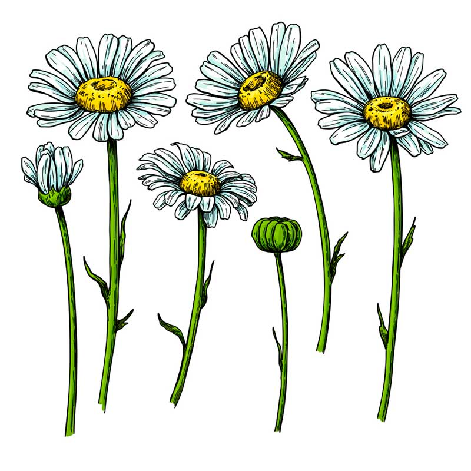 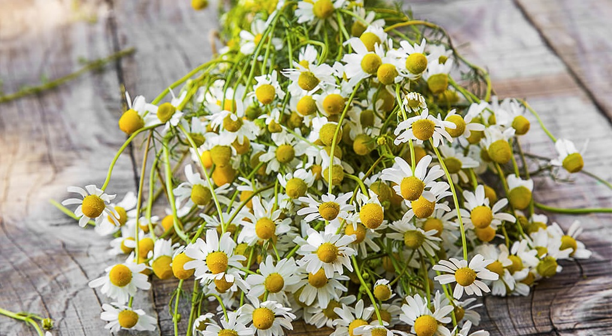Господарське значення:Настій або чай з ромашки служить заспокійливим засобом при істерії, епілепсії, хореї, невралгії. З цією ж метою квітки ромашки застосовують для купання новонароджених, щоб немовля краще спало.
Медицинське значення:Ромашка — одна з найцінніших лікарських рослин, яку використовують при захворюваннях шлунково-кишкового тракту, сечовивідних шляхів, органів дихальної та репродуктивної системи.Ромашка є протизапальним, потогінним, заспокійливим, кровоспинним і знеболювальним засобом. Вона знімає спазм, прискорює регенерацію епітелію, зупиняє процеси гниття і бродіння у кишківнику, стимулює травлення, має дезінфекційні властивості. Завдяки вмісту хамазулену належить до антиалергійних препаратів.
Місця її росту та регіони:Лікарська культура добре себе почуває в умовах помірного клімату. Тому найчастіше її можна зустріти на території Східної та Західної Європи. Ромашка широко поширена в Північній Америці. Не зростає вона тільки в північних штатах, де досить суворі кліматичні умови.